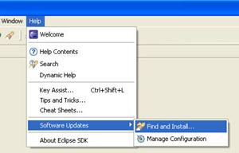
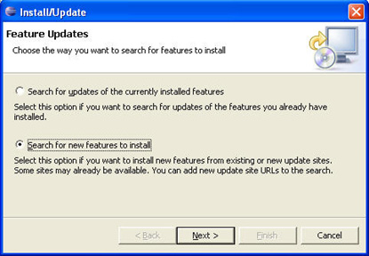
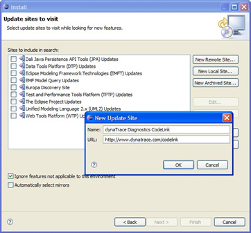
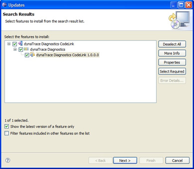
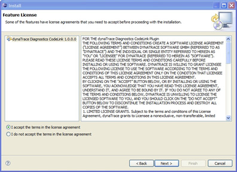
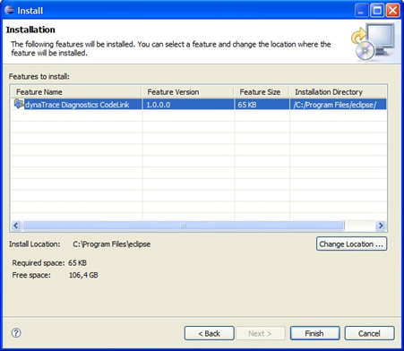
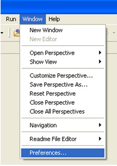
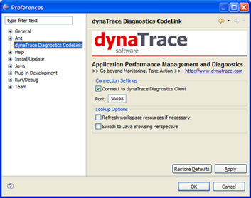
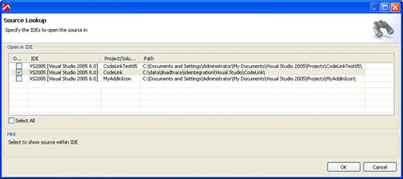
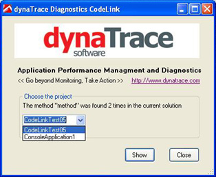

dynaTrace Eclipse Integration Plugin
Table of Contents (Start)
CodeLink Plugin 2.6.2 for Eclipse

|
Name |
CodeLink Plugin for Eclipse |
|
Description |
The dynaTrace CodeLink Plugin provides a comfortable way to perform look-ups of sources files and methods from applications under diagnosis. |
|
Version |
2.6.2 |
|
Support |
|
|
Supported dynaTrace Diagnostics Versions |
2.5, 2.6 |
|
Supported Eclipse Versions |
Eclipse 3.2 or later |
|
Download |
Use Eclipse Update Manager or Download CodeLink Plugin for Eclipse |
To further simplify problem resolution, dynaTrace Diagnostics directly integrates with Eclipse through its CodeLink plug-in. Once dynaTrace Diagnostics has identified a certain source code fragment as the root cause of a particular problem, developers can directly jump from the dynaTrace Diagnostics Client to the exact location within their Eclipse development environment where they need to apply the necessary changes. This saves the time and hassle required to switch between dynaTrace and Eclipse then locating the right classes and methods within the source code by replacing it with a single click.
Install dynaTrace Diagnostics CodeLink for Eclipse
dynaTrace Diagnostics CodeLink is an extension for eclipse, so in order to use it you would need to download and setup eclipse on your machine. Please check http://www.eclipse.org for installing eclipse.
Installation
There are two methods for installing dynaTrace Diagnostics CodeLink
A) Copy the dynaTrace Diagnostics CodeLink Plug-In directly into Eclipse:
Copy the dynaTrace Diagnostics CodeLink PlugIn into the "plugins" directory of your Eclipse installation. After copying the dynaTrace Diagnostics CodeLink PlugIn start Eclipse with the parameter "-clean".
B) Download and Install dynaTrace Diagnostics CodeLink directly by Eclipse
Now, it is easy to setup CodeLink plug-in using the eclipse update manager, as described in the following steps.
1. Select the eclipse menu "Find and Install..." as shown in the following figure. It will bring up "Install/Update" dialog box.

2. Select the second option "Search for new features to install" on the "Install/Update" dialog box and then click on "Next" button. It will bring up the "Install" dialog box.

3. Click on "New Remote Site..." button and fill-out information in the "New Update Site" dialog box as shown the following figure. Use the URL http://www.dynatrace.com/codelink/ for the current version of the Plug-In. For previous versions of the dynaTrace Diagnostics CodeLink Plug-In visit our download page and follow the manual installation procedure noted above. Note: The dynaTrace Diagnostics CodeLink version must match the same dynaTrace Diagnostics Client version number to be compatible. E.g. use dynaTrace Diagnostics CodeLink 2.5 with the dynaTrace Diagnostics 2.5.x Client and the dynaTrace Diagnostics CodeLink 2.1 version with the dynaTrace Diagnostics 2.1.x version.

4. Select CodeLink and click on "Next" button.

5. In order to install the plug-in you need to accept the license agreement.

6. Click on "Finish" button and allow the application to re-start.

The final step is to configure CodeLink. (Optional)
7. Select eclipse menu "Preferences" as shown in the following figure. It will bring up the "Preferences" dialog box.

8. Select "dynaTrace Diagnostics CodeLink" on the left. This dialog allows you to customize the port that the plug-in listens on for look-up requests by dynaTrace Diagnostics Client as well as to enable/disable the listener.

This completes the installation and configuration of dynaTrace Diagnostics CodeLink.
Communication with Diagnostics Client
The dynaTrace Diagnostics CodeLink IDE Integration works for Java and .NET source code and supports single or multiple instances of Microsoft Visual Studio or Eclipse. Java source code is automatically opened within Eclipse (if available) and .NET source code within Microsoft Visual Studio. If several instances of Microsoft Visual Studio are available, following dialog appears within the Diagnostics Client.

If only one instance of Eclipse or Microsoft Visual Studio is available, the Eclipse or Microsoft Visual Studio (depending on the source code) is automatically opened.
If several matches have been found within different projects, choose the project you want to jump into.

Choose the right Microsoft Visual Studio instance and jump directly into the Microsoft Visual Studio. Eclipse works the same way.
In case the application fails to install or does not function properly feel free to contact support at http://support.dynatrace.com
Upgrade from CodeLink 2.1 to 2.5
To upgrade dynaTrace Diagnostics CodeLink 2.1 to 2.5 you must uninstall the previous version first.
If you have installed the Plug-In by directly copying into Eclipse please follow these steps:
-
Remove the file <eclipse/plugins/com.dynatrace.diagnostics.codelink.2.1.x>
Start Eclipse with the parameter -clean
If you have installed dynaTrace Diagnostics CodeLink directly by Eclipse please follow these steps:
-
Remove the file <eclipse/plugins/com.dynatrace.diagnostics.codelink.2.1.x>
-
Remove the directory <eclipse/features/com.dynatrace.diagnostics.codelink.2.1.x>
-
Start Eclipse with the parameter -clean